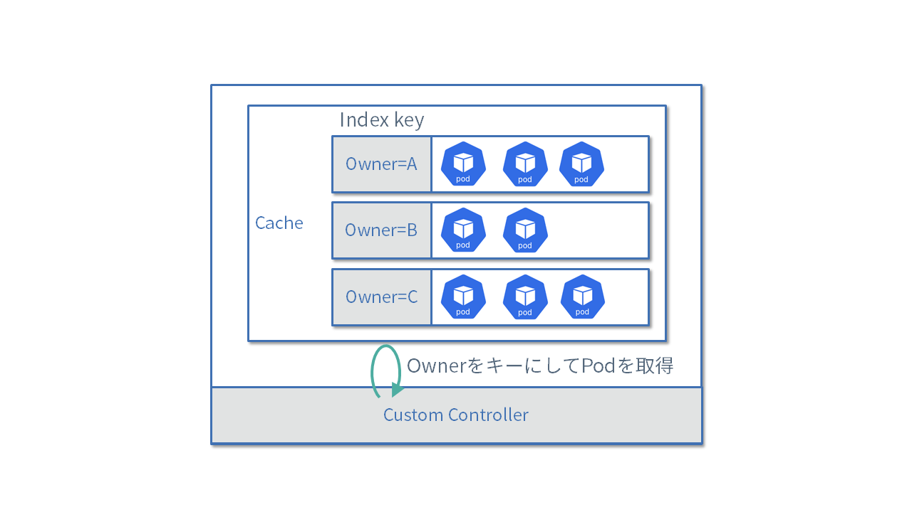

Manager
Manager负责管理多个控制器，并提供了领导者选举、指标、健康检查服务器等功能。
虽然我们已经介绍了Manager的一些功能，但它还有许多其他方便的功能。让我们继续介绍一些。
领导者选举
如果要提高自定义控制器的可用性，可以使用部署功能将多个自定义控制器的Pod部署到集群中。 然而，如果Reconcile处理程序针对相同资源执行某些处理，可能会导致竞态条件。
因此，Manager提供了领导者选举功能。 这样，它可以从多个进程中选出一个领导者，只有选中的领导者进程才能执行Reconcile处理。
使用领导者选举很简单，只需在NewManager的选项中将LeaderElection设置为true，并在LeaderElectionID中指定领导者选举的ID即可。
领导者选举会从指定了相同LeaderElectionID的进程中选出一个领导者。
import:“new-manager”,unindent:“true”
接下来，将config/manager/manager.yaml中的replicas字段更改为2，然后部署MarkdownView控制器。
如果查看部署的两个Pod的日志，您将看到被选为领导者的Pod是唯一执行Reconcile处理的Pod。 终止被选为领导者的Pod后，您将看到另一个Pod成为新的领导者。
需要提醒的是，由于Admission Webhook处理不会导致竞态条件，因此不是领导者的进程依然可以执行Admission Webhook处理。
Manager提供了许多便利功能，领导者选举只是其中之一。希望这些信息有助于您更好地了解和使用Manager。
Runnable
在实现自定义控制器时，除了Reconcile循环之外，有时可能希望启动goroutine定期执行某些任务，或者等待某些事件。 Manager提供了一种机制来实现这种处理。
例如，TopoLVM在定期收集指标和启动gRPC服务器方面使用了Runnable。
要使用Runnable功能，您需要准备以下代码，实现Ruunable接口。 下面是一个以10秒为周期执行某些处理的Runner的实现示例。
package runners
import (
"context"
"fmt"
"time"
)
type Runner struct {
}
func (r Runner) Start(ctx context.Context) error {
ticker := time.NewTicker(10 * time.Second)
defer ticker.Stop()
for {
select {
case <-ctx.Done():
return ctx.Err()
case <-ticker.C:
fmt.Println("run something")
}
}
}
func (r Runner) NeedLeaderElection() bool {
return true
}
当调用Manager的Start方法时，Start方法将作为goroutine调用。
通过参数context，您可以接收来自Manager的退出通知。
err = mgr.Add(&runners.Runner{})
值得注意的是，此Runner的处理通常只在作为领导者运行的Manager中起作用。
如果希望在非领导者状态下始终运行某些处理，可以实现LeaderElectionRunnable接口，并在NeedLeaderElection方法中返回 false。
EventRecorder
在自定义资源的状态中保存了当前状态，如果想记录过去执行过的处理情况，可以利用Kubernetes提供的Event资源。
Manager提供了记录事件的功能，通过GetEventRecorderFor可以获取EventRecorder。
在初始化Reconciler时，通过传递EventRecorder来记录事件。
import:“init-reconciler”,unindent:“true”
在Reconciler中将其作为字段持有。
// 在Reconciler中持有EventRecorder
type MarkdownViewReconciler struct {
// Other fields
eventRecorder record.EventRecorder
}
可通过Event, Eventf, AnnotatedEventf等函数来记录事件。
在这里，我们决定在更新状态时记录以下类型的事件。注意，事件类型只能是EventTypeNormal或EventTypeWarning。
// 记录事件
r.eventRecorder.Event(resource, corev1.EventTypeNormal, "StatusUpdated", "Status has been updated")
Event资源与指定的资源关联，并且与该资源相同的命名空间中创建Event资源。
为了让自定义控制器能够创建Event资源，需要添加下面的RBAC标记，并通过make manifests更新清单文件。
カスタムリソースのStatusには、現在の状態が保存されています。 一方、これまでどのような処理が実施されてきたのかを記録したい場合、Kubernetesが提供するEventリソースを利用できます。
Managerはイベントを記録するための機能を提供しており、GetEventRecorderForでEventRecorderを取得できます。
以下のように、Reconcilerを初期化する際にEventRecorderを渡します。
Reconcilerではこれをフィールドとして持っておきます。
import:“reconciler”,unindent:“true”
Eventを記録するための関数として、Event, Eventf, AnnotatedEventfなどが用意されています。
ここでは、ステータス更新時に以下のようなイベントを記録することにしましょう。なお、イベントタイプにはEventTypeNormal, EventTypeWarningのみ指定できます。
import:“call-recorder-event”,unindent:“true”
このEventリソースは第1引数で指定したリソースに結びいており、そのリソースと同じnamespaceにEventリソースが作成されます。
カスタムコントローラーがEventリソースを作成できるように、以下のようなRBACのマーカーを追加し、make manifestsでマニフェストを更新しておきます。
//+kubebuilder:rbac:groups=core,resources=events,verbs=create;update;patch
コントローラーを実行し、作成したEventリソースを確認してみましょう。なお、Eventリソースはデフォルト設定では1時間経つと消えてしまいます。
$ kubectl get events -n default
LAST SEEN TYPE REASON OBJECT MESSAGE
14s Normal Updated markdownview/markdownview-sample MarkdownView(default:markdownview-sample) updated: NotReady
13s Normal Updated markdownview/markdownview-sample MarkdownView(default:markdownview-sample) updated: Healthy
HealthProbe
Managerには、ヘルスチェック用のAPIのエンドポイントを作成する機能が用意されています。
ヘルスチェック機能を利用するには、Managerの作成時にHealthProbeBindAddressでエンドポイントのアドレスを指定します。
import:“new-manager”,unindent:“true”
そして、AddHealthzCheckとAddReadyzCheckで、ハンドラの登録をおこないます。
デフォルトではhealthz.Pingという何もしない関数を利用していますが、独自関数の登録も可能です。
import:“health”,unindent:“true”
カスタムコントローラーのマニフェストでは、このヘルスチェックAPIをlivenessProbeとreadinessProbeとして利用するように指定されています。
import:“probe”,unindent:“true”
FieldIndexer
クライアントの使い方で紹介したように、複数のリソースを取得する際にラベルやnamespaceで絞り込むことが可能です。 しかし、特定のフィールドの値に応じてフィルタリングしたいこともあるでしょう。 controller-runtimeではインメモリにキャッシュしているリソースに対してインデックスを張る仕組みが用意されています。

インデックスを利用するためには事前にManagerのGetFieldIndexer()を利用して、どのフィールドの値に基づいてインデックスを張るのかを指定します。
下記の例ではConfigMapリソースに対して、ownerReferencesに指定されているMarkdownViewリソースの名前でインデックスを作成しています。
const ownerControllerField = ".metadata.ownerReference.controller"
func indexByOwnerMarkdownView(obj client.Object) []string {
cm := obj.(*corev1.ConfigMap)
owner := metav1.GetControllerOf(cm)
if owner == nil {
return nil
}
if owner.APIVersion != viewv1.GroupVersion.String() || owner.Kind != "MarkdownView" {
return nil
}
return []string{owner.Name}
}
func (r *MarkdownViewReconciler) SetupWithManager(mgr ctrl.Manager) error {
err := mgr.GetFieldIndexer().IndexField(ctx, &corev1.ConfigMap{}, ownerControllerField, indexByOwnerMarkdownView)
if err != nil {
return err
}
return nil
}
IndexFieldの第3引数のフィールド名には、どのフィールドを利用してインデックスを張っているのかを示す文字列を指定します。
ここでは、.metadata.ownerReference.controllerという文字列を指定しています。
実際にインデックスに利用しているフィールドのパスと一致していなくても問題はないのですが、一致させると可読性がよくなるのでおすすめです。
なおインデックスはGVKごとに作成されるので、異なるタイプのリソース間でフィールド名が同じになっても問題ありません。 またnamespaceスコープのリソースの場合は、内部的にフィールド名にnamespace名を付与して管理しているので、明示的にフィールド名にnamespaceを含める必要はありません。 インデクサーが返す値はスライスになっていることから分かるように、複数の値にマッチするようなインデックスの構成も可能です。
上記のようなインデックスを作成しておくと、List()を呼び出す際に特定のフィールドが指定した値と一致するリソースだけを取得できます。
例えば以下の例であれば、ownerReferenceに指定したMarkdownViewリソースがセットされているConfigMapだけを取得できます。
var cms corev1.ConfigMapList
err := r.List(ctx, &cms, client.MatchingFields(map[string]string{ownerControllerField: mdView.Name}))
if err != nil {
return err
}
EventRecorder
在自定义资源的状态中保存了当前状态，如果想记录过去执行过的处理情况，可以利用Kubernetes提供的Event资源。
Manager提供了记录事件的功能，通过GetEventRecorderFor可以获取EventRecorder。
在初始化Reconciler时，通过传递EventRecorder来记录事件。
// 初始化Reconciler时传递EventRecorder
eventRecorder := mgr.GetEventRecorderFor("markdownview-controller")
在Reconciler中将其作为字段持有。
// 在Reconciler中持有EventRecorder
type MarkdownViewReconciler struct {
// Other fields
eventRecorder record.EventRecorder
}
可通过Event, Eventf, AnnotatedEventf等函数来记录事件。
在这里，我们决定在更新状态时记录以下类型的事件。注意，事件类型只能是EventTypeNormal或EventTypeWarning。
// 记录事件
r.eventRecorder.Event(resource, corev1.EventTypeNormal, "StatusUpdated", "Status has been updated")
Event资源与指定的资源关联，并且与该资源相同的命名空间中创建Event资源。
为了让自定义控制器能够创建Event资源，需要添加下面的RBAC标记，并通过make manifests更新清单文件。
HealthProbe
Manager 提供了创建 API 端点以进行健康检查的能力。
要使用健康检查功能，请在创建Manager时通过“HealthProbeBindAddress”指定端点地址。
import:“new-manager”,unindent:“true”
然后，使用AddHealthzCheck和AddReadyzCheck注册处理程序。
默认情况下，使用一个名为healthz.Ping的函数，该函数不执行任何操作，但您也可以注册自己的函数。
import:“health”,unindent:“true”
在自定义控制器清单中，此运行状况检查 API 被指定用作livenessProbe和readinessProbe。
import:“probe”,unindent:“true”
FieldIndexer
正如如何使用客户端中介绍的，在检索多个资源时，可以通过标签或命名空间来缩小范围。 但是，您可能还想根据特定字段的值进行过滤。 控制器运行时提供了一种对内存中缓存的资源进行索引的机制。
要使用索引，请提前使用 Manager 的 GetFieldIndexer() 指定基于哪个字段值创建索引。 在下面的示例中，使用“ownerReferences”中指定的 MarkdownView 资源的名称为 ConfigMap 资源创建索引。
对于“IndexField”的第三个参数的字段名称，指定一个字符串，指示哪个字段用于索引。 在这里，我们指定字符串“.metadata.ownerReference.controller”。 即使路径与索引实际使用的字段路径不匹配也没有问题，但建议匹配，这样可以提高可读性。
请注意，索引是为每个GVK创建的，因此即使不同类型的资源之间字段名称相同也没有问题。 另外，对于命名空间范围资源，命名空间名称在内部分配给字段名称并进行管理，因此不需要在字段名称中显式包含命名空间。 从索引器返回的值是切片可以看出，可以构造匹配多个值的索引。
通过创建像上面这样的索引，您可以在调用“List()”时仅检索特定字段与指定值匹配的资源。 例如，在下面的示例中，只能检索拥有在ownerReference中指定的MarkdownView资源的ConfigMap。
var cms corev1.ConfigMapList
err := r.List(ctx, &cms, client.MatchingFields(map[string]string{ownerControllerField: mdView.Name}))
if err != nil {
return err
}